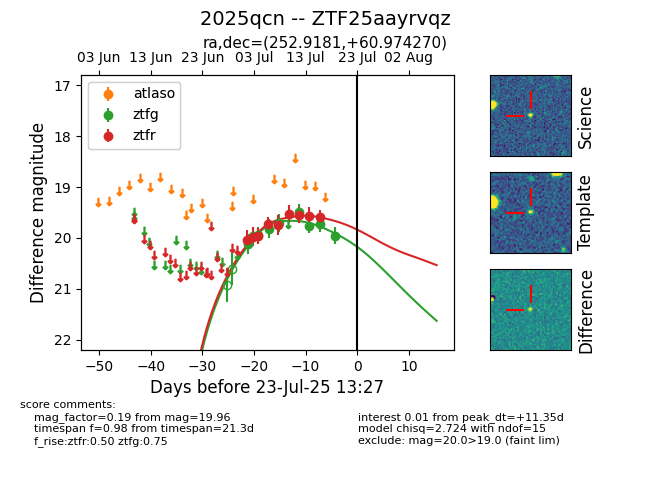

Target ZTF25aayrvqz at 2025-07-23 13:27, see:
FINK: fink-portal.org/ZTF25aayrvqz
Lasair: lasair-ztf.lsst.ac.uk/objects/ZTF25aayrvqz
ALeRCE: alerce.online/object/ZTF25aayrvqz
TNS: wis-tns.org/object/2025qcn
YSE: ziggy.ucolick.org/yse/transient_detail/2025qcn
alt names
ZTF25aayrvqz (ztf,fink)
2025qcn (tns,yse)
coordinates:
equatorial (ra, dec) = (252.9181,+60.97427)
galactic (l, b) = (90.7368,+37.89692)
photometry
last ztfg=19.96, ztfr=19.59
9 ztfg, 9 ztfr detections
